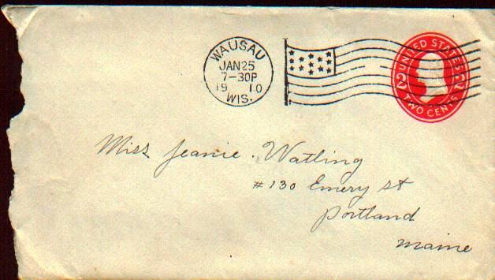

The Family Chronicle
No. 163 October 26, 2008
____________________________________________________________________

A letter mailed to my mother, who was living in Portland, Maine, from my father who was working in Wausau, Wisconsin. The letter is dated January 28, 1910; they were married in October of that year. My mother’s name was Jane but Dad, and the Glendenning side of the family, always called her Jean
Bing Crosby and the Miramichi
The following note came from Art Mills:
“The well-known Oscar winning actor, singer and movie star, Harry Lillis ‘Bing’ Crosby” has roots in the Miramichi. His great grandparents Dennis and Catherine (Driscoll) Harrigan came from Ireland and settled in Williamstown; his other great grandparents, John and Ann (Meighen) Ahearn lived in Newcastle. His grandparents, Dennis and Catherine (Ahearn) Harrigan, Jr. moved to Minnesota and then to Tacoma, Washington. His mother, Kate Harrigan married Harry Lowe Crosby and Bing was born in 1903.
Huclkelberry Island
Thanks also to Art Mills for a copy of a deed, dated January 14, 1876, for the sale of one-half of Huckleberry Island owned by Lemuel J.Tweedie to Thomas Williston for the sum of three hundred and seventy five dollars. The land was previously owned and occupied by John Mills.
Words you don’t hear very often
Bed tick – a sack filled with feathers, leaves, hay or straw and used as a mattress.
Consumption – an early word for tuberculosis
Corduroy road – a road built of logs (Wasn’t part of the road to the Escuminac lighthouse a corduroy road?)
Cuspidor – a spittoon
Circular – a letter to family members to which each one adds comments and forwards to another
Copybook – a scribbler or notebook used to practice penmanship
Cutter – a small sleigh pulled by one horse
Dasher – the plunger used in a churn
Divining rod – a forked stick used to determine where to dig or drill a well
Dogmill – a wooden wheel on which a dog ran thereby providing power to a churn or spit
For genealogists
Thanks to Irma Downing for this list of New Year’s resolutions of yesteryear that frustrate genealogists of today.
“It is New Year's Eve,
1852 and John Smith sits at his desk by candlelight. He dips
his quill pen in ink and begins to writes his New Year's
resolutions:
**********************************
1.
No man is truly well-educated unless he learns to spell his
name at least three different ways within the same document.
I resolve to give >> the appearance of being extremely
well-educated in the coming year.
2. I resolve to
see to it that all of my children will have the same names that
my ancestors have used for six generations in a row.
3.
My age is no one's business but my own. I hereby resolve
to never list the same age or birth year twice on any document.
4.
I resolve to have each of my children baptized in a different
church -- either in a different faith or in a different parish.
Every third child will not be baptized at all, or will be baptized
by an itinerant minister who keeps no records.
5. I
resolve to move to a new town, new county, or new state at
least once every 10 years -- just before those pesky
enumerators come around asking silly questions.
6. I
will make every attempt to reside in counties and towns where
no vital records are maintained or where the courthouse burns down
every few years.
7. I resolve to join an obscure
religious cult that does not believe in record keeping or in
participating in military service.
8. When the tax
collector comes to my door, I'll loan him my pen, which has
been dipped in rapidly fading blue ink.
9. I resolve
that if my beloved wife Mary should die, I will marry
another Mary.
10. I resolve not to make a will.
Who needs to spend money on a lawyer?
11. I resolve
to not clutter up the good farm pasture with headstones that
will just get broken or fade with time anyway.
12. I
resolve to protect my family and friends privacy, by giving
false names and places for events.
13. I resolve to never
give the correct accounts of misdeeds in the family, so when Uncle
Lem shot that fellow and was tried for murder, my children
will be told he stole a cow.
14. I resolve to never
trim the family cemetery of brush and tangle weed, to keep out
any one doing that silly Genealogical work.
15. I resolve
to always alternate my child's and wife's first and middle
names when the census taker comes around, just to give him
practice with his spelling.
16. I resolve to come
from Ireland (where there are no records, or, if there are,
they can only be examined by visiting the exact village and,
>> pleading with the local clergy, (who is hostile to
anyone not of his belief, which of course you are) and/or
handing over a fee equal to or exceeding your yearly income for
one hour's research which may not
find anything.)
17.
I resolve that not only shall I NOT die in my country of birth,
nor shall my children (yea verily) unto the sixth generation.
18.
I resolve that I shall call my children by odd names which the
enumerator shall spell incorrectly.
19. I resolve
that I shall be absent on the night of the census.
20.
I resolve that if unable to be absent on census night I shall
endeavor to be enumerated twice.
21. I resolve that
when I die my children/wife are instructed to give the wrong
details for my death certificate.
22. I resolve that
I and most of my family shall die suddenly just before death
certifications started to be used, in a parish where easy
access to the records ceased the previous year.
How times change
During a conversation in the Miramichi last week, mention was made of “skinning a pig.” It was new to me. In my time, when one butchered a pig one scalded the carcass and scraped off the bristles; the hot water loosened the bristles. I am told that practice is no longer used. Now one skins a pig in much the same way as one skins a calf. That, I hope to see some day. On the other hand, perhaps someone was pulling my leg.
The Family Chronicle (Copyright) is an occasional newsletter published by Don Glendenning and posted on the family website. It is intended to share information about my family, community and the times in which I grew up. While every effort is made to be accurate, errors are likely to occur. Comments, enquiries and information may be sent to 62 Queen Elizabeth Drive, Charlottetown, PEI, C1A 3A9. Tel: 902 892 5859. Email: don@glendenning.net Web: www.glendenning.net/don